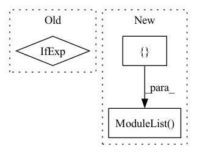

Pattern ID :1683

Before Change
// downsample klass
downsample_klass = DownsampleWithBlur if antialias_downsample else Downsample
if cross_embed_downsample:
downsample_klass = partial(CrossEmbedLayer, kernel_sizes = cross_embed_downsample_kernel_sizes)
After Change
skip_connect_dims.append(current_dim)
self.downs.append(nn.ModuleList([
pre_downsample,
ResnetBlock(current_dim, current_dim, cond_dim = layer_cond_dim, linear_attn = layer_use_linear_cross_attn, time_cond_dim = time_cond_dim, groups = groups),
nn.ModuleList([ResnetBlock(current_dim, current_dim, time_cond_dim = time_cond_dim, groups = groups, use_gca = use_global_context_attn) for _ in range(layer_num_resnet_blocks)]),
transformer_block_klass(dim = current_dim, heads = attn_heads, dim_head = attn_dim_head, ff_mult = ff_mult),
downsample_klass(current_dim, dim_out) if not memory_efficient and not is_last else None,
]))
// middle layers
In pattern: SUPERPATTERN
Frequency: 4
Non-data size: 3
Instances
Fragment ID: 4513271
Project Name: lucidrains/imagen-pytorch
Commit Name: 36bdefca0e8670ca42b39236315121b703b9533f
Time: 2022-06-27
Author: lucidrains@gmail.com
File Name: imagen_pytorch/imagen_pytorch.py
M Class Name: Unet
N Class Name: Unet
M Method Name: __init__(1)
N Method Name: __init__(1)
M Parent Class: nn.Module
N Parent Class: nn.Module
M File Name: imagen_pytorch/imagen_pytorch.py
N File Name: imagen_pytorch/imagen_pytorch.py
M Start Line: 1178
M End Line: 1250
N Start Line: 1148
N End Line: 1221
'>
Before Change
downsample_kernel_size=downsample_kernel_size,
)
// self.adaptive_avg_pool = avg_pool_type(1)
self.dropout = dropout_type(dropout_prob) if dropout_prob is not None else None
// self.last_linear = nn.Linear(512 * block.expansion, num_classes)
self.num_features = 512 * block.expansion
After Change
reduction=reduction,
downsample_kernel_size=downsample_kernel_size,
)
all_layers = [layer0, layer1, layer2, layer3, layer4]
self.layers = nn.ModuleList(all_layers[:num_layers + 1])
for m in self.modules():
if isinstance(m, conv_type):
nn.init.kaiming_normal_(torch.as_tensor(m.weight))
'>
Fragment ID: 4513276
Project Name: bwittmann/transoar
Commit Name: 8591d3352283319c0f54f6a3839e52fec08b126f
Time: 2021-11-23
Author: bastian.wittmann@tum.de
File Name: transoar/models/backbones/senet_3D.py
M Class Name: SENet
N Class Name: SENet
M Method Name: __init__(12)
N Method Name: __init__(12)
M Parent Class: nn.Module
N Parent Class: nn.Module
M File Name: transoar/models/backbones/senet_3D.py
N File Name: transoar/models/backbones/senet_3D.py
M Start Line: 66
M End Line: 150
N Start Line: 70
N End Line: 155
'>
Before Change
self.seq_len = seq_len
self.prob_survival = prob_survival
self.to_embed = nn.Embedding(num_tokens, dim) if exists(num_tokens) else nn.Identity()
self.layers = nn.ModuleList([Residual(PreNorm(dim, gMLPBlock(dim = dim, dim_ff = dim_ff, seq_len = seq_len, heads = heads, window = window))) for i in range(depth)])
After Change
self.to_embed = nn.Embedding(num_tokens, dim)
window = cast_tuple(window, depth)
layers = nn.ModuleList([])
for ind, w in zip(range(depth), window):
layer_blocks = nn.ModuleList([
PreNorm(dim, gMLPBlock(dim = dim, dim_ff = dim_ff, seq_len = seq_len, heads = heads, window = w))
'>
Fragment ID: 4513272
Project Name: lucidrains/g-mlp-gpt
Commit Name: 7642e36ff19c6b299a77e5c1ace038e9e6726202
Time: 2021-05-20
Author: lucidrains@gmail.com
File Name: g_mlp_gpt/g_mlp_gpt.py
M Class Name: gMLPGPT
N Class Name: gMLPGPT
M Method Name: __init__(1)
N Method Name: __init__(1)
M Parent Class: nn.Module
N Parent Class: nn.Module
M File Name: g_mlp_gpt/g_mlp_gpt.py
N File Name: g_mlp_gpt/g_mlp_gpt.py
M Start Line: 188
M End Line: 195
N Start Line: 194
N End Line: 215
'>
Before Change
):
super().__init__()
self.upsample = UpsampleBlur() if upsample else upsample
self.conv = EqualizedModulatedConv2d(
in_channels, out_channels, kernel_size, style_dim,
stride=stride, padding=padding, demod=True
After Change
in_channels, out_channels, style_dim, num_conv=2, up_name="bilinear"
):
super().__init__()
self.block = nn.ModuleList([
Upsample2x(up_name),
Blur2d(),
ModulatedConv2d(in_channels, out_channels, style_dim, 3),
InjectNoise(),
nn.LeakyReLU(0.2, inplace=True)
])
for _ in range(num_conv-1):
self.block.extend([
ModulatedConv2d(out_channels, out_channels, style_dim, 3),
InjectNoise(),
'>
Fragment ID: 4513274
Project Name: stomoya/animeface
Commit Name: b3652bae109c713da926d5532eb014b02135da52
Time: 2020-12-14
Author: blackie0110@gmail.com
File Name: implementations/StyleGAN2/model.py
M Class Name: StyleBlock
N Class Name: StyleBlock
M Method Name: __init__(6)
N Method Name: __init__(8)
M Parent Class: nn.Module
N Parent Class: nn.Module
M File Name: implementations/StyleGAN2/model.py
N File Name: implementations/StyleGAN2/model.py
M Start Line: 195
M End Line: 205
N Start Line: 155
N End Line: 171